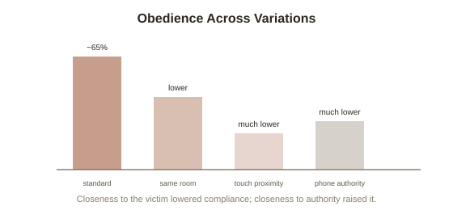

Chapter 3: Milgram's Variations — What Actually Changes Obedience
Chapter 1's figure mentioned that Milgram's obedience rate shifted dramatically across different versions of the experiment — but the full scope of what Milgram actually tested deserves its own chapter, because he didn't run the study once. He ran it, with careful variations, over a dozen different ways, turning a single striking result into something closer to a map of exactly which situational levers control obedience, and by how much.
Proximity to the victim: the single biggest lever
In Milgram's original setup, the "learner" receiving shocks was in a separate room, heard but not seen. When Milgram moved the learner into the same room as the participant, obedience to the maximum shock dropped substantially. When he required the participant to physically hold the learner's hand onto a shock plate themselves, obedience dropped further still — to a small fraction of the original rate. Each step that made the victim's suffering more immediate, more physically present, and harder to psychologically distance from, reduced how far participants were willing to go, even though the actual moral content of the act (delivering the same shock) never changed at all — only its perceptual and physical distance from the person delivering it.
Proximity to the authority figure works in the opposite direction
Milgram found the reverse effect for the experimenter giving the orders: when the authority figure left the room and gave instructions by telephone instead of standing right there in a lab coat, obedience dropped sharply — some participants even claimed to continue while secretly giving lower shocks than instructed. Physical closeness to authority increased compliance; physical closeness to the victim decreased it. Together, these two findings suggest obedience isn't simply about a fixed personality trait or a stable moral compass — it's substantially about the immediate, felt social presence of the person issuing commands versus the person suffering from them, and how forcefully each competes for attention in the moment.

Peer models: Asch's finding, replicated inside Milgram's own paradigm
Milgram ran a variation directly testing Chapter 2's unanimity-breaking effect inside his own obedience setup: two additional confederates, posing as fellow participants, refused to continue at a certain voltage and were dismissed by the experimenter. When a genuine participant witnessed peers refusing before them, obedience to the maximum shock dropped dramatically — roughly ninety percent of participants stopped before the maximum, essentially the mirror image of the original result. This is Asch's single-ally effect, transplanted directly into a life-or-death-feeling scenario: watching someone else break from the demanded compliance made it dramatically easier for the next person to break too, even under an authority figure's direct, in-person pressure.
The agentic state: how obedience feels from the inside
Milgram's own theoretical explanation for the entire pattern is called the agentic state (a psychological state in which a person sees themselves as an instrument carrying out another person's wishes, rather than an autonomous agent responsible for their own actions) — Milgram argued that under legitimate-seeming authority, many people shift from feeling personally responsible for an action to feeling like a mere conduit for someone else's decision, which is why so many participants, visibly distressed, kept pressing the switch while saying some version of "he told me to." The experimenter's calm, repeated scripted phrase — "the experiment requires that you continue" — worked specifically by reinforcing that shift: it reassigned responsibility back onto "the experiment" and the person requiring it, rather than the hand actually on the switch. Every variation above can be read as either strengthening or weakening this agentic shift: physical distance from the victim made it easier to stay in the agentic state; physical distance from the authority weakened the authority's ability to sustain it; and a peer's visible refusal offered direct, live evidence that stepping back out of the agentic state and reclaiming personal responsibility was actually possible.
Try this
Ideas for noticing or testing this in your own life.
- Notice a situation where you've felt like "just following instructions" rather than personally responsible for an outcome — try naming, specifically, what shifted you into that agentic framing, and whether reclaiming personal responsibility for the decision changes how you'd act.
- Try the proximity test on a decision you're avoiding full engagement with: does making the real-world consequence more vivid and immediate (rather than abstract and distant) change your willingness to go along with it?
Worth pulling on?
A few loose threads from this chapter — if any of these genuinely grab you, that's a good sign of where to go next.
- Understanding exactly what makes obedience easier to resist raises the natural next question: what actually predicts which specific individuals refuse, even under the most pressuring conditions? → The subject of the next chapter: whistleblowers and resisters.
- The agentic state's diffusion of personal responsibility has a close structural cousin in how groups, not just individuals, dilute a sense of personal duty to act. → Already in the library: Group Dynamics and Crowds covers diffusion of responsibility in bystander situations specifically.